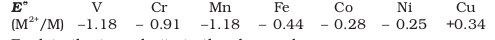
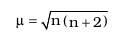
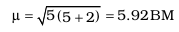

Nearly all the transition elements display typical metallic properties such as high tensile strength, ductility, malleability, high thermal and electrical conductivity and metallic lustre. With the exceptions of Zn, Cd, Hg and Mn, they have one or more typical metallic structures at normal temperatures.
Lattice Structures of Transition Metals
| Sc | Ti | V | Cr | Mn | Fe | Co | Ni | Cu | Zn |
| hcp(bcc) | hccp (bcc) | bcc | bcc(bcc,ccp) | X (hcp) | bcp(hcp) | ccp | ccp | ccp | X(hcp) |
| Y | Zr | Nb | Mo | Tc | Ru | Rh | Pd | Ag | Cd |
| hcp(bcc) | hcp(bcc) | bcc | bcc | hcp | hcp | ccp | ccp | ccp | X(hcp) |
| La | Hf | Ta | W | Re | Os | Ir | Pt | Au | Hg |
| hcp(ccp,bcc) | hcp(bcc) | bcc | bcc | hcp | hcp | ccp | ccp | ccp | X |
bcc = body centred cubic; hcp = hexagonal close packed; ccp = cubic close packed; X = a typical metal structure)
Fig. 8.1: Trends in melting points of transition elements
The transition metals (with the exception of Zn, Cd and Hg) are very much hard and have low volatility. Their melting and boiling points are high. Fig. 8.1 depicts the melting points of the 3d, 4d and 5d transition metals. The high melting points of these metals are attributed to the involvement of greater number of electrons from (n-1)d in addition to the ns electrons in the interatomic metallic bonding. In any row the melting points of these metals rise to a maximum at d5 except for anomalous values of Mn and Tc and fall regularly as the atomic number increases. They have high enthalpies of atomisation which are shown in Fig. 8.2. The maxima at about the middle of each series indicate that one unpaired electron per d orbital is particularly favourable for strong interatomic interaction. In general, greater the number of valence electrons, stronger is the resultant bonding. Since the enthalpy of atomisation is an important factor in determining the standard electrode potential of a metal, metals with very high enthalpy of atomisation (i.e., very high boiling point) tend to be noble in their reactions (see later for electrode potentials).
Another generalisation that may be drawn from Fig. 8.2 is that the metals of the second and third series have greater enthalpies of atomisation than the corresponding elements of the first series; this is an important factor in accounting for the occurrence of much more frequent metal – metal bonding in compounds of the heavy transition metals.
Fig. 8.2 Trends in enthalpies of atomisation of transition elements
Fig. 8.3: Trends in atomic radii of transition elements
The factor responsible for the lanthanoid contraction is somewhat similar to that observed in an ordinary transition series and is attributed to similar cause, i.e., the imperfect shielding of one electron by another in the same set of orbitals. However, the shielding of one 4f electron by another is less than that of one d electron by another, and as the nuclear charge increases along the series, there is fairly regular decrease in the size of the entire 4f n orbitals.
The decrease in metallic radius coupled with increase in atomic mass results in a general increase in the density of these elements. Thus, from titanium (Z = 22) to copper (Z = 29) the significant increase in the density may be noted (Table 8.2).
Table 8.2: Electronic Configurations and some other Properties of the First Series of Transition Elements
| Element | Sc | Ti | V | Cr | Mn | Fe | Co | Ni | Cu | Zn |
| Atomic Number | 21 | 22 | 23 | 24 | 25 | 26 | 27 | 28 | 29 | 30 |
| Electronic configuration | ||||||||||
| M | 3d14s2 | 3d24s2 | 3d34s2 | 3d54s1 | 3d54s2 | 3d64s2 | 3d74s2 | 3d84s2 | 3d104s1 | 3d104s2 |
| M+ | 3d14s1 | 3d24s1 | 3d34s1 | 3d5 | 3d54s1 | 3d64s1 | 3d74s1 | 3d84s1 | 3d10 | 3d104s1 |
| M2+ | 3d1 | 3d2 | 3d3 | 3d4 | 3d5 | 3d6 | 3d7 | 3d8 | 3d9 | 3d10 |
| M3+ | [Ar] | 3d1 | 3d2 | 3d3 | 3d4 | 3d5 | 3d6 | 3d7 | - | - |
| Enthalpy of atomisation ∆H | ||||||||||
| 326 | 473 | 514 | 397 | 281 | 416 | 425 | 430 | 339 | 126 | |
| Ionisation enthalpy ∆ i H /kJ mol-1 | ||||||||||
| I | 631 | 656 | 650 | 653 | 717 | 762 | 758 | 736 | 745 | 906 |
| II | 1235 | 1309 | 1414 | 1592 | 1509 | 1561 | 1644 | 1752 | 1958 | 1734 |
| III | 2393 | 2657 | 2833 | 2990 | 3260 | 2962 | 3243 | 3402 | 3552 | 3829 |
| Metallic/ionic radii/pm | ||||||||||
| M | 164 | 147 | 135 | 129 | 137 | 126 | 125 | 125 | 128 | 137 |
| M2+ | - | - | 79 | 82 | 82 | 77 | 74 | 70 | 73 | 75 |
| M3+ | 73 | 67 | 64 | 62 | 65 | 65 | 61 | 60 | - | - |
| Standard electrode potential E /V | ||||||||||
| M2+/M+ | - | -1.63 | -1.18 | -0.90 | -1.18 | -0.44 | -0.28 | -0.25 | +0.34 | -0.76 |
| M3+/M2+ | - | -0.37 | -0.26 | -0.41 | +1.57 | +0.77 | +1.97 | - | - | - |
| Density/g cm-3 | ||||||||||
| 3.43 | 4.1 | 6.07 | 7.19 | 7.21 | 7.8 | 8.7 | 8.9 | 8.9 | 7.1 | |
Example 8.2
Why do the transition elements exhibit higher enthalpies of atomisation?
Solution
Because of large number of unpaired electrons in their atoms they have stronger interatomic interaction and hence stronger bonding between atoms resulting in higher enthalpies of atomisation.
Due to an increase in nuclear charge which accompanies the filling of the inner d orbitals, there is an increase in ionisation enthalpy along each series of the transition elements from left to right. However, many small variations occur. Table 8.2 gives the values for the first three ionisation enthalpies of the first row elements. These values show that the successive enthalpies of these elements do not increase as steeply as in the main group elements. Although the first ionisation enthalpy, in general, increases, the magnitude of the increase in the second and third ionisation enthalpies for the successive elements, in general, is much higher.
The irregular trend in the first ionisation enthalpy of the 3d metals, though of little chemical significance, can be accounted for by considering that the removal of one electron alters the relative energies of 4s and 3d orbitals. So the unipositive ions have dn configurations with no 4s electrons. There is thus, a reorganisation energy accompanying ionisation with some gains in exchange energy as the number of electrons increases and from the transference of s electrons into d orbitals. There is the generally expected increasing trend in the values as the effective nuclear charge increases. However, the value of Cr is lower because of the absence of any change in the d configuration and the value for Zn higher because it represents an ionisation from the 4s level. The lowest common oxidation state of these metals is +2. To form the M2+ ions from the gaseous atoms, the sum of the first and second ionisation energies is required in addition to the enthalpy of atomisation for each element. The dominant term is the second ionisation enthalpy which shows unusually high values for Cr and Cu where the d5 and d10 configurations of the M+ ions are disrupted, with considerable loss of exchange energy. The value for Zn is correspondingly low as the ionisation consists of the removal of an electron which allows the production of the stable d10 configuration. The trend in the third ionisation enthalpies is not complicated by the 4s orbital factor and shows the greater difficulty of removing an electron from the d5 (Mn2+) and d10 (Zn2+) ions superimposed upon the general increasing trend. In general, the third ionisation enthalpies are quite high and there is a marked break between the values for Mn2+ and Fe2+. Also the high values for copper, nickel and zinc indicate why it is difficult to obtain oxidation state greater than two for these elements.
Although ionisation enthalpies give some guidance concerning the relative stabilities of oxidation states, this problem is very complex and not amenable to ready generalisation.
One of the notable features of a transition element is the great variety of oxidation states it may show in its compounds. Table 8.3 lists the common oxidation states of the first row transition elements.
Table 8.3: Oxidation States of the first row Transition Metals
(the most common ones are in bold types)
| Sc | Ti | V | Cr | Mn | Fe | Co | Ni | Cu | Zn |
| +2 | +2 | +2 | +2 | +2 | +2 | +2 | +1 | +2 | |
| +3 | +3 | +3 | +3 | +3 | +3 | +3 | +3 | +2 | |
| +4 | +4 | +4 | +4 | +4 | +4 | +4 | |||
| +5 | +5 | +5 | |||||||
| +6 | +6 | +6 | |||||||
| +7 |
The elements which give the greatest number of oxidation states occur in or near the middle of the series. Manganese, for example, exhibits all the oxidation states from +2 to +7. The lesser number of oxidation states at the extreme ends stems from either too few electrons to lose or share (Sc, Ti) or too many d electrons (hence fewer orbitals available in which to share electrons with others) for higher valence (Cu, Zn). Thus, early in the series scandium(II) is virtually unknown and titanium (IV) is more stable than Ti(III) or Ti(II). At the other end, the only oxidation state of zinc is +2 (no d electrons are involved). The maximum oxidation states of reasonable stability correspond in value to the sum of the s and d electrons upto manganese (TiIVO2, VVO2+, CrV1O42–, MnVIIO4–) followed by a rather abrupt decrease in stability of higher oxidation states, so that the typical species to follow are FeII,III, CoII,III, NiII, CuI,II, ZnII.
The variability of oxidation states, a characteristic of transition elements, arises out of incomplete filling of d orbitals in such a way that their oxidation states differ from each other by unity, e.g., VII, VIII, VIV, VV. This is in contrast with the variability of oxidation states of non transition elements where oxidation states normally differ by a unit of two.
An interesting feature in the variability of oxidation states of the d–block elements is noticed among the groups (groups 4 through 10). Although in the p–block the lower oxidation states are favoured by the heavier members (due to inert pair effect), the opposite is true in the groups of d-block. For example, in group 6, Mo(VI) and W(VI) are found to be more stable than Cr(VI). Thus Cr(VI) in the form of dichromate in acidic medium is a strong oxidising agent, whereas MoO3 and WO3 are not.
Low oxidation states are found when a complex compound has ligands capable of π-acceptor character in addition to the σ-bonding. For example, in Ni(CO)4 and Fe(CO)5, the oxidation state of nickel and iron is zero.
Example 8.3
Name a transition element which does not exhibit variable oxidation states.
Solution
Scandium (Z = 21) does not exhibit variable oxidation states.
Example 8.3
Name a transition element which does not exhibit variable oxidation states.
Solution
Scandium (Z = 21) does not exhibit variable oxidation states.
Table 8.4 contains the thermochemical parameters related to the transformation of the solid metal atoms to M2+ions in solution and their standard electrode potentials. The observed values of E and those calculated using the data of Table 8.4 are compared in Fig. 8.4.
The unique behaviour of Cu, having a positive E, accounts for its inability to liberate H2 from acids. Only oxidising acids (nitric and hot concentrated sulphuric) react with Cu, the acids being reduced. The high energy to transform Cu(s) to Cu2+(aq) is not balanced by its hydration enthalpy. The general trend towards less negative E values across the series is related to the general increase in the sum of the first and second ionisation enthalpies. It is interesting to note that the value of Efor Mn, Ni and Zn are more negative than expected from the trend.
Fig. 8.4: Observed and calculated values for the standard electrode potentials (M2+® M°) of the elements Ti to Zn
Example 8.4
Why is Cr2+ reducing and Mn3+ oxidising when both have d4 configuration?
Solution
Cr2+ is reducing as its configuration changes from d4 to d3, the latter having a half-filled t2g level (see Unit 9) . On the other hand, the change from Mn2+ to Mn3+ results in the half-filled (d5) configuration which has extra stability.
Table 8.4: Thermochemical data (kJ mol-1) for the first row Transition Elements and the Standard Electrode Potentials for the Reduction of MII to M.
| Element(M) | ∆aH(M) | ∆iH1 | ∆1H2 | ∆hydH(M2+) | E/V |
| Ti | 469 | 661 | 1310 | -1866 | -1.63 |
| V | 515 | 648 | 1370 | -1895 | -1.18 |
| Cr | 398 | 653 | 1590 | -1925 | -0.90 |
| Mn | 279 | 716 | 1510 | -1862 | -1.18 |
| Fe | 418 | 762 | 1560 | -1998 | -0.44 |
| Co | 427 | 757 | 1640 | -2079 | -0.28 |
| Ni | 431 | 736 | 1750 | -2121 | -0.25 |
| Cu | 339 | 745 | 1960 | -2121 | -0.34 |
| Zn | 130 | 908 | 1730 | -2059 | -0.76 |
The stability of the half-filled d sub-shell in Mn2+ and the completely filled d10 configuration in Zn2+ are related to their E values, whereas E for Ni is related to the highest negative ∆hydH .
An examination of the E(M3+/M2+) values (Table 8.2) shows the varying trends. The low value for Sc reflects the stability of Sc3+ which has a noble gas configuration. The highest value for Zn is due to the removal of an electron from the stable d10 configuration of Zn2+. The comparatively high value for Mn shows that Mn2+(d5) is particularly stable, whereas comparatively low value for Fe shows the extra stability of Fe3+ (d5). The comparatively low value for V is related to the stability of V2+ (half-filled t2g level, Unit 9).
Table 8.5 shows the stable halides of the 3d series of transition metals. The highest oxidation numbers are achieved in TiX4 (tetrahalides), VF5 and CrF6. The +7 state for Mn is not represented in simple halides but MnO3F is known, and beyond Mn no metal has a trihalide except FeX3 and CoF3. The ability of fluorine to stabilise the highest oxidation state is due to either higher lattice energy as in the case of CoF3, or higher bond enthalpy terms for the higher covalent compounds, e.g., VF5 and CrF6.
Table 8.5: Formulas of Halides of 3d Metals
| Oxidation Number | |||||||||
| +6 | CrF6 | ||||||||
| +5 | VF5 | CrF5 | |||||||
| +4 | TiX4 | VX14 | CrX4 | MnF4 | FeX31 | CoF3 | CuX2 | ||
| +3 | TiX3 III | VX3 | CrX3 | MnF3 | FeX2 | CoX2 | NiX2 | CuXiii | ZnX2 |
| +2 | TiX2 | VX2 | CrX2 | MnX2 | |||||
| +1 | |||||||||
Key: X = F → I; X I = F → Br; X II = F, CI; X III = CI → I
Although VV is represented only by VF5, the other halides, however, undergo hydrolysis to give oxohalides, VOX3. Another feature of fluorides is their instability in the low oxidation states e.g., VX2 (X = CI, Br or I) and the same applies to CuX. On the other hand, all CuII halides are known except the iodide. In this case, Cu2+ oxidises I– to I2:
2Cu2+ +4I- → Cu2I2(s) + I 2
However, many copper (I) compounds are unstable in aqueous solution and undergo disproportionation.
2Cu+ → Cu2+ + Cu
The stability of Cu2+ (aq) rather than Cu+(aq) is due to the much more negative ∆hydHof Cu2+ (aq) than Cu+, which more than compensates for the second ionisation enthalpy of Cu.
The ability of oxygen to stabilise the highest oxidation state is demonstrated in the oxides. The highest oxidation number in the oxides (Table 8.6) coincides with the group number and is attained in Sc2O3 to Mn2O7. Beyond Group 7, no higher oxides of Fe above Fe2O3, are known, although ferrates (VI)(FeO4)2–, are formed in alkaline media but they readily decompose to Fe2O3 and O2. Besides the oxides, oxocations stabilise Vv as VO2+, VIV as VO2+ and TiIV as TiO2+. The ability of oxygen to stabilise these high oxidation states exceeds that of fluorine. Thus the highest Mn fluoride is MnF4 whereas the highest oxide is Mn2O7. The ability of oxygen to form multiple bonds to metals explains its superiority. In the covalent oxide Mn2O7, each Mn is tetrahedrally surrounded by O’s including a Mn–O–Mn bridge. The tetrahedral [MO4]n- ions are known for VV, CrVl, MnV, MnVl and MnVII.
Table 8.6: Oxides of 3d Metals
| Oxidation Number | 3 | 4 | 5 | 6 | Groups 7 |
8 | 9 | 10 | 11 | 12 |
| +7 | Mn2O7 | |||||||||
| +6 | CrO3 | |||||||||
| +5 | V2O5 | MnO2 | ||||||||
| +4 | TiO2 | V2O4 | CrO2 | Mn2O3 | Fe2O3 | |||||
| +3 | SC2O3 | Ti2O3 | V2O3 | Cr2O3 | Mn3O4 | Fe3O4 | Co3O4 | |||
| MnO | FeO | CoO | NiO | CuO | ||||||
| +2 | TiO | VO | CrO | Cu2O | ZnO | |||||
| +1 |
mixed oxides
Example 8.5
How would you account for the increasing oxidising power in the Example 8.5 series VO2 + < Cr2O7 2– < MnO4 – ?
Solution
This is due to the increasing stability of the lower species to which they are reduced.
Transition metals vary widely in their chemical reactivity. Many of them are sufficiently electropositive to dissolve in mineral acids, although a few are ‘noble’—that is, they are unaffected by single acids.
The metals of the first series with the exception of copper are relatively more reactive and are oxidised by 1M H+, though the actual rate at which these metals react with oxidising agents like hydrogen ion (H+) is sometimes slow. For example, titanium and vanadium, in practice, are passive to dilute non oxidising acids at room temperature. The E values for M2+/M (Table 8.2) indicate a decreasing tendency to form divalent cations across the series. This general trend towards less negative E values is related to the increase in the sum of the first and second ionisation enthalpies. It is interesting to note that the E values for Mn, Ni and Zn are more negative than expected from the general trend. Whereas the stabilities of half-filled d subshell (d5) in Mn2+ and completely filled d subshell (d10) in zinc are related to their E e values; for nickel, Eo value is related to the highest negative enthalpy of hydration.
An examination of the E values for the redox couple M3+/M2+(Table 8.2) shows that Mn3+ and Co3+ ions are the strongest oxidising agents in aqueous solutions. The ions Ti2+, V2+ and Cr2+ are strong reducing agents and will liberate hydrogen from a dilute acid, e.g.,
2 Cr2+(aq) + 2 H+(aq) → 2 Cr3+(aq) + H2(g)
Example 8.6
For the first row transition metals the Eo values are:

Explain the irregularity in the above values.
Solution
The E (M2+/M) values are not regular which can be explained from the irregular variation of ionisation enthalpies (∆iH1 + ∆ iH2 ) and also the sublimation enthalpies which are relatively much less for manganese and vanadium.
Example 8.7
Why is the E value for the Mn3+/Mn2+ couple much more positive than that for Cr3+/Cr2+ or Fe3+/Fe2+? Explain.
Solution
Much larger third ionisation energy of Mn (where the required change is d5 to d4) is mainly responsible for this. This also explains why the +3 state of Mn is of little importance.
When a magnetic field is applied to substances, mainly two types of magnetic behaviour are observed: diamagnetism and paramagnetism (Unit 1). Diamagnetic substances are repelled by the applied field while the paramagnetic substances are attracted. Substances which are attracted very strongly are said to be ferromagnetic. In fact, ferromagnetism is an extreme form of paramagnetism. Many of the transition metal ions are paramagnetic.
Paramagnetism arises from the presence of unpaired electrons, each such electron having a magnetic moment associated with its spin angular momentum and orbital angular momentum. For the compounds of the first series of transition metals, the contribution of the orbital angular momentum is effectively quenched and hence is of no significance. For these, the magnetic moment is determined by the number of unpaired electrons and is calculated by using the ‘spin-only’ formula, i.e.,

where n is the number of unpaired electrons and µ is the magnetic moment in units of Bohr magneton (BM). A single unpaired electron has a magnetic moment of 1.73 Bohr magnetons (BM).
The magnetic moment increases with the increasing number of unpaired electrons. Thus, the observed magnetic moment gives a useful indication about the number of unpaired electrons present in the atom, molecule or ion. The magnetic moments calculated from the ‘spin-only’ formula and those derived experimentally for some ions of the first row transition elements are given in Table 8.7. The experimental data are mainly for hydrated ions in solution or in the solid state.
Table 8.7: Calculated and Observed Magnetic Moments (BM)
| Ion | configuration | Unpaired electron(s) | Magnetic moment | |
| calculated | Observed | |||
| SC3+ | 3d0 | 0 | 0 | 0 |
| Ti3+ | 3d1 | 1 | 1.73 | 1.75 |
| Ti2+ | 3d2 | 2 | 2.84 | 2.76 |
| V2+ | 3d3 | 3 | 3.87 | 3.86 |
| Cr2+ | 3d4 | 4 | 4.90 | 4.80 |
| Mn2+ | 3d5 | 5 | 5.92 | 5.96 |
| Fe2+ | 3d6 | 4 | 4.90 | 5.3 - 5.5 |
| Co2+ | 3d7 | 3 | 3.87 | 4.4 - 5.2 |
| Ni2+ | 3d8 | 2 | 2.84 | 2.9 - 3.4 |
| Cu2+ | 3d9 | 1 | 1.73 | 1.8 - 2.2 |
| Zn2+ | 3d10 | 0 | 0 | |
Example 8.8
Calculate the magnetic moment of a divalent ion in aqueous solution if its atomic number is 25.
Solution
With atomic number 25, the divalent ion in aqueous solution will have d5 configuration (five unpaired electrons). The magnetic moment, μ is

8.3.10 Formation of Coloured Ions
When an electron from a lower energy d orbital is excited to a higher energy d orbital, the energy of excitation corresponds to the frequency of light absorbed (Unit 9). This frequency generally lies in the visible region. The colour observed corresponds to the complementary colour of the light absorbed. The frequency of the light absorbed is determined by the nature of the ligand. In aqueous solutions where water molecules are the ligands, the colours of the ions observed are listed in Table 8.8. A few coloured solutions of d–block elements are illustrated in Fig. 8.5
Table 8.8: Colours of Some of the First Row (aquated) Transition Metal Ions
| Configuration | Example | Colour |
| 3d0 | Sc3+ | colourless |
| 3d0 | Ti4+ | colourless |
| 3d1 | Ti3+ | purple |
| 3d1 | V4+ | blue |
| 3d2 | V3+ | green |
| 3d3 | V2+ | violet |
| 3d3 | Cr3+ | violet |
| 3d4 | Mn3+ |
violet |
| 3d4 |
Cr2+ | blue |
| 3d5 | MN2+ | pink |
| 3d5 |
Fe3+ |
yellow |
| 3d6 | Fe2+ | green |
| 3d63d7 |
Co3+Co2+ | blue pink |
| 3d8 |
Ni 2+ | green |
| 3d9 |
CU 2+ | blue |
| 3d10 | Zn 2+ | colourless |
Fig. 8.5: Colours of some of the first row transition metal ions in aqueous solutions. From left to right: V4+,V3+,Mn2+,Fe3+,Co2+,Ni2+and Cu2+ .
Complex compounds are those in which the metal ions bind a number of anions or neutral molecules giving complex species with characteristic properties. A few examples are: [Fe(CN)6]3–, [Fe(CN)6]4–, [Cu(NH3)4]2+ and [PtCl4]2–. (The chemistry of complex compounds is dealt with in detail in Unit 9). The transition metals form a large number of complex compounds. This is due to the comparatively smaller sizes of the metal ions, their high ionic charges and the availability of d orbitals for bond formation.
The transition metals and their compounds are known for their catalytic activity. This activity is ascribed to their ability to adopt multiple oxidation states and to form complexes. Vanadium(V) oxide (in Contact Process), finely divided iron (in Haber’s Process), and nickel (in Catalytic Hydrogenation) are some of the examples. Catalysts at a solid surface involve the formation of bonds between reactant molecules and atoms of the surface of the catalyst (first row transition metals utilise 3d and 4s electrons for bonding). This has the effect of increasing the concentration of the reactants at the catalyst surface and also weakening of the bonds in the reacting molecules (the activation energy is lowering). Also because the transition metal ions can change their oxidation states, they become more effective as catalysts. For example, iron(III) catalyses the reaction between iodide and persulphate ions.
2 I– + s2O82– → I2 + 2 SO42–
An explanation of this catalytic action can be given as:
2 Fe3+ + 2 I– → 2 Fe2+ + I2
2 Fe2+ + s2O82– → 2 Fe3+ + 2SO42–
Interstitial compounds are those which are formed when small atoms like H, C or N are trapped inside the crystal lattices of metals. They are usually non stoichiometric and are neither typically ionic nor covalent, for example, TiC, Mn4N, Fe3H, VH0.56 and TiH1.7, etc. The formulas quoted do not, of course, correspond to any normal oxidation state of the metal. Because of the nature of their composition, these compounds are referred to as interstitial compounds. The principal physical and chemical characteristics of these compounds are as follows:
(i) They have high melting points, higher than those of pure metals.
(ii) They are very hard, some borides approach diamond in hardness.
(iii) They retain metallic conductivity.
(iv) They are chemically inert.
An alloy is a blend of metals prepared by mixing the components. Alloys may be homogeneous solid solutions in which the atoms of one metal are distributed randomly among the atoms of the other. Such alloys are formed by atoms with metallic radii that are within about 15 percent of each other. Because of similar radii and other characteristics of transition metals, alloys are readily formed by these metals. The alloys so formed are hard and have often high melting points. The best known are ferrous alloys: chromium, vanadium, tungsten, molybdenum and manganese are used for the production of a variety of steels and stainless steel. Alloys of transition metals with non transition metals such as brass (copper-zinc) and bronze (copper-tin), are also of considerable industrial importance.
Example 8.9
What is meant by 'disproportionation' of an oxidation state? Give an example.
Solution
When a particular oxidation state becomes less stable relative to other oxidation states, one lower, one higher, it is said to undergo disproportionation. For example, manganese (VI) becomes unstable relative to manganese(VII) and manganese (IV) in acidic solution.
3 MnVIO4 2– + 4 H+ → 2 MnVIIO– 4 + MnIVO2 + 2H2O